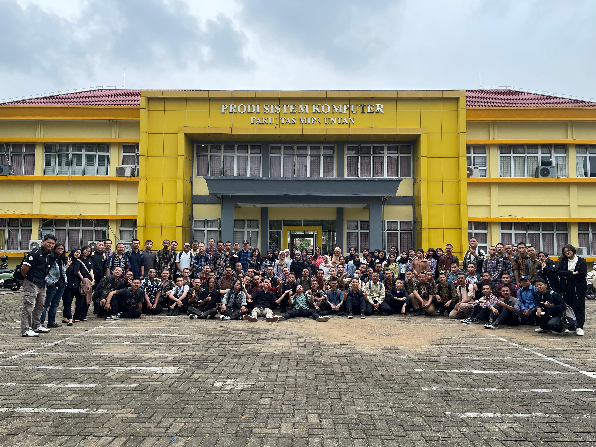

SYNTERA'25
Perjalanan Baru SYNTERA'25 Dimulai
Sebuah perjalanan baru dimulai. Dari ruang kelas, kegiatan bersama, hingga berbagai cerita yang perlahan membentuk identitas SYNTERA'25.
STORY / 001
Baca cerita
↗